Cross Street 18&20
Location: Singapore
Status: Construction / 2022
Category: Offices
Non human client: -
Collaborator: BENOY

The project began during lockdown, when the absence of people made
nature’s return newly visible.
Native wildflowers were placed at the upper reaches of the thirty-metre
green facade, safely above the road and its constant disturbance.
Cross Street 18&20
A pause for urban pollinators
The height helps address public concern about insects being too close, but its main purpose is ecological: to offer pollinators a quiet place to rest within the noise of Singapore.
It is a modest attempt to make urban coexistence with nature tangible rather than rhetorical.


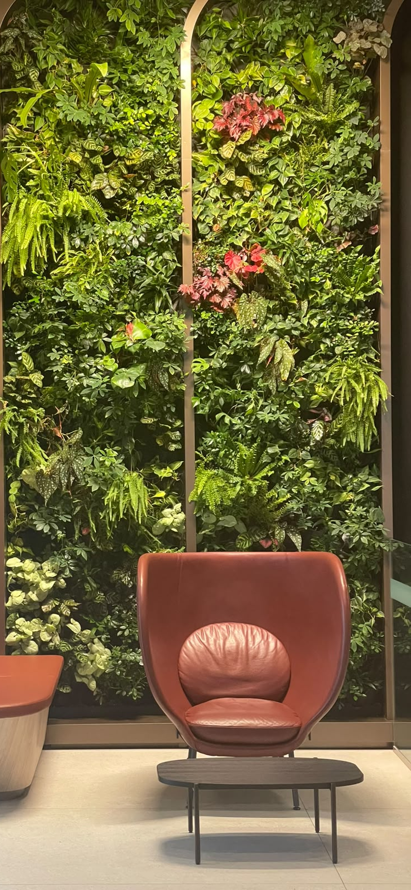
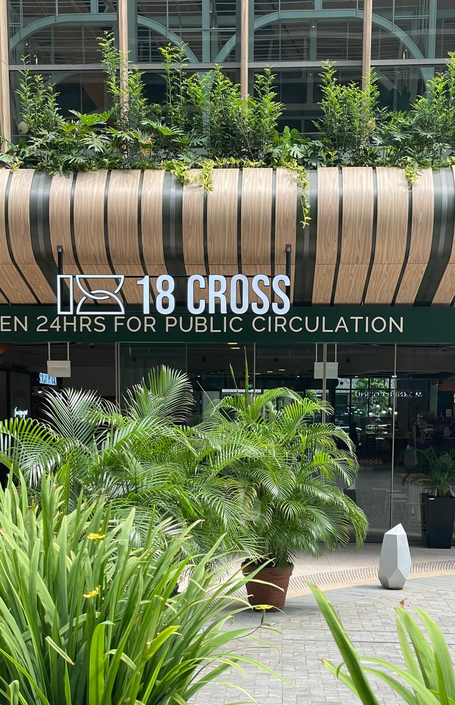
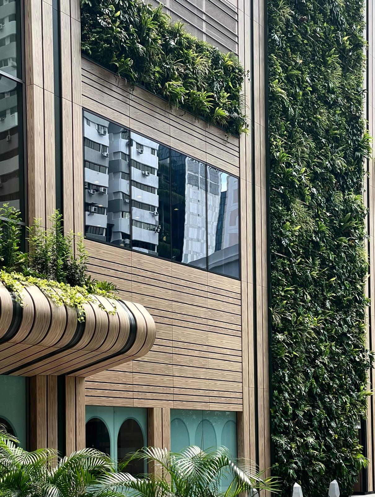
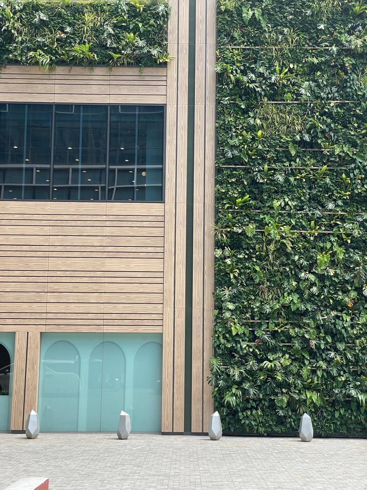
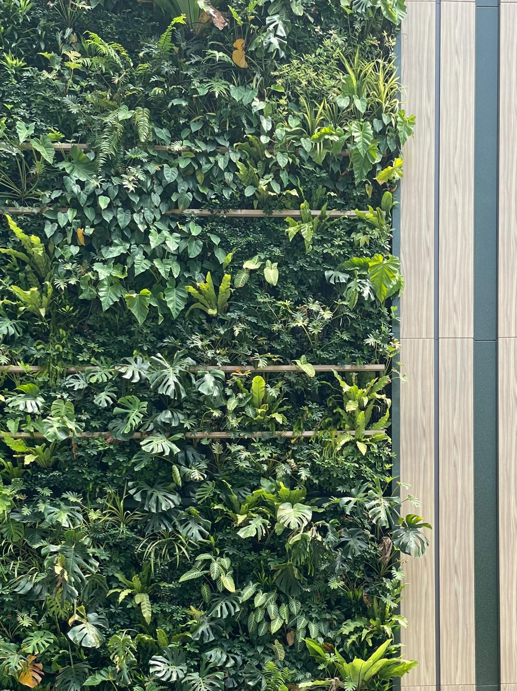
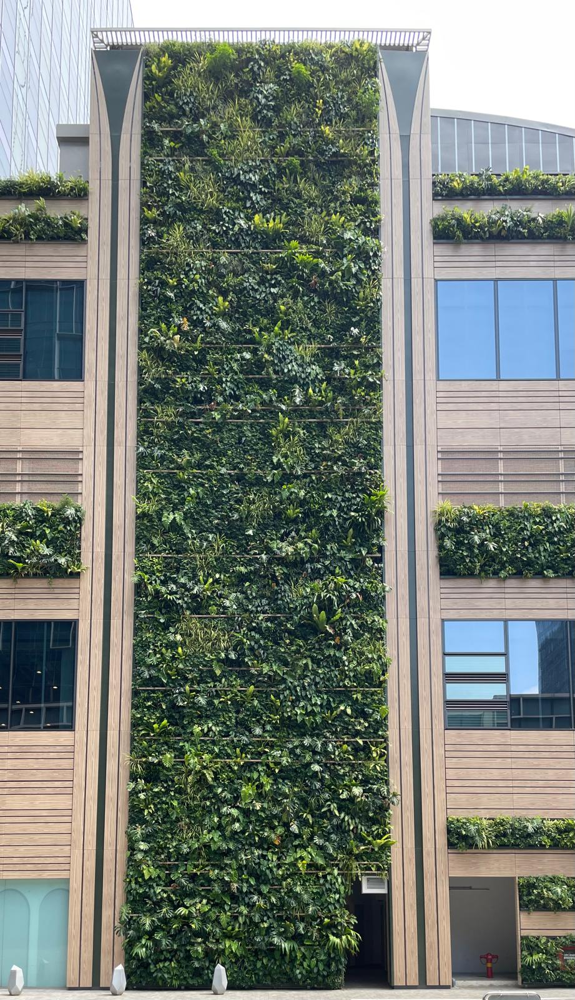
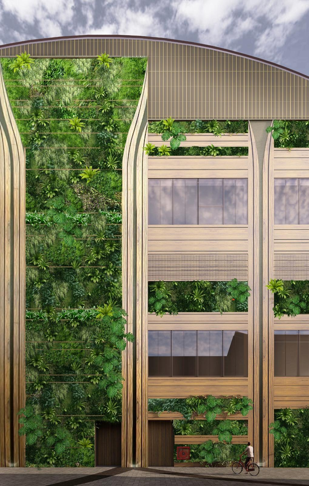
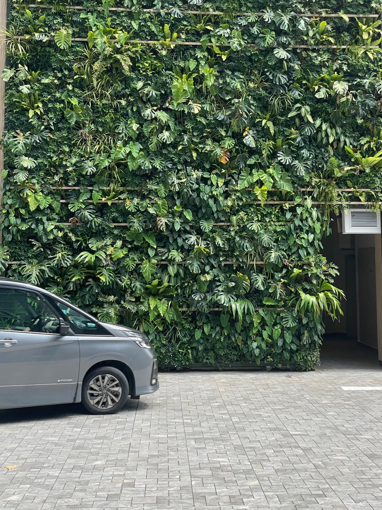
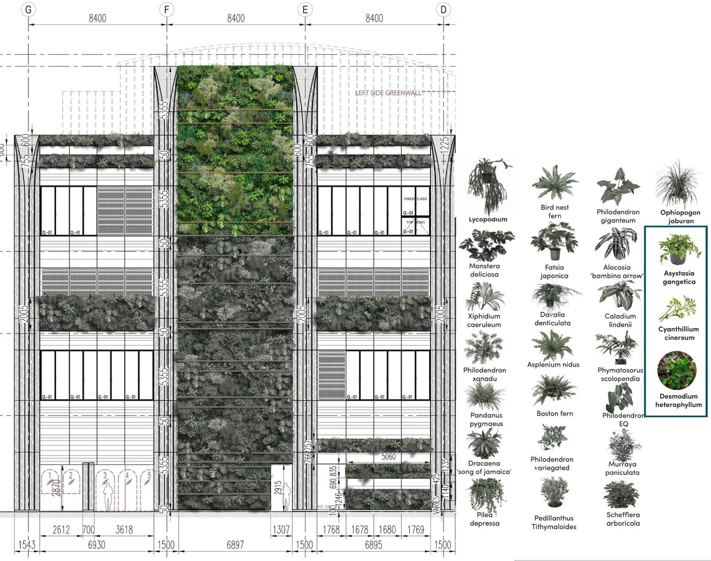
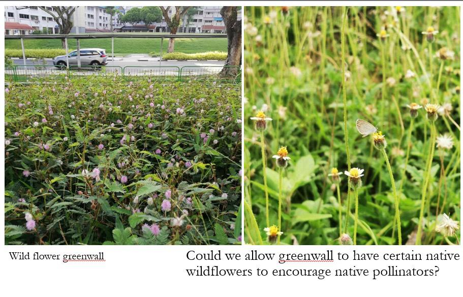
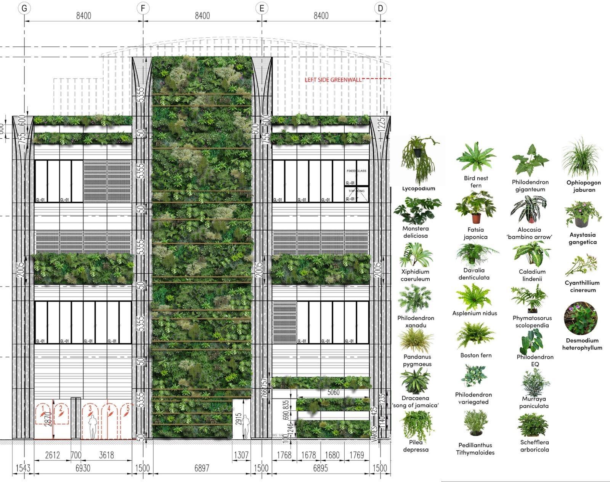
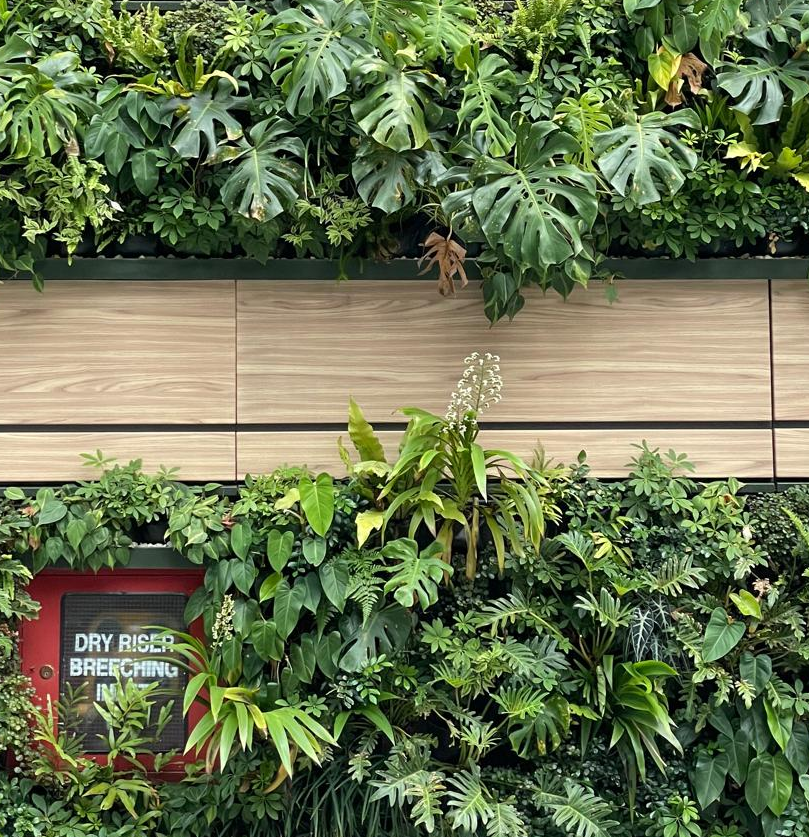